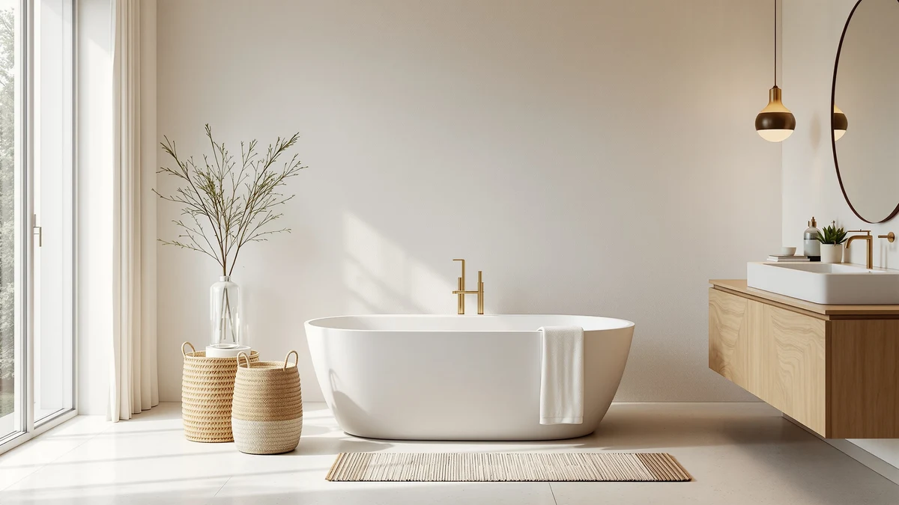

Quick Answer
This sj star&jane 43" solid review finds a solid surface freestanding tub priced at $1,499.99, within $20 of all three MEDUNJESS alternatives compared here, but the only one built from solid surface rather than a Japanese soaking tub shape. If a 43 inch footprint fits your bathroom, it's the straightforward solid surface pick in this comparison; if you'd rather save $20.09, the MEDUNJESS 65'' below is worth a look first.
Our pick: SJ Star&Jane 43" Solid Surface, $1,499.99 Check Price on Amazon
Things to Know Before You Buy
- The SJ Star&Jane 43" Solid Surface measures 43 inches end to end, the same footprint as the MEDUNJESS 43" Japanese Soaking Tub covered later in this review.
- At $1,499.99, this sj star&jane 43" solid review finds it priced within $20 of all three MEDUNJESS alternatives compared here.
- It's built from solid surface material, a different construction than the Japanese soaking tub style used by two of the three alternatives.
- The Amazon listing includes five product photos showing the tub from multiple angles, useful for checking the basin shape and drain placement before you order.
- None of the four listings in this comparison publish a star rating or review count, so this review relies on published pricing, size, and listing detail rather than customer scores.
This SJ Star&Jane 43" Solid review breaks down whether a solid surface freestanding tub at a 43 inch footprint earns its $1,499.99 price against three MEDUNJESS alternatives covered in the same comparison. At 43 inches, it splits the difference between a compact secondary-bathroom tub and the longer soaking tubs some buyers want for a primary suite. We compared its solid surface construction, size, and price against the MEDUNJESS 65'' Free Standing Tub, the MEDUNJESS 43" Japanese Soaking Tub, and the MEDUNJESS 51'' Japanese Soaking Tub to see where it earns its spot.
Solid surface construction is what sets this tub apart from the two Japanese soaking tubs in this review. It's a nonporous, molded material more commonly seen on countertops and vanity tops, chosen for a smooth finish that resists staining better than many standard tub shells. At $1,499.99, the SJ Star&Jane 43" Solid Surface costs $20.09 more than the MEDUNJESS 65'' Free Standing Tub, $0.99 more than the MEDUNJESS 43" Japanese Soaking Tub at the same length, and $10.00 more than the MEDUNJESS 51'' Japanese Soaking Tub. None of the four listings publish a star rating or review count, so material, size, and price are what this comparison leans on.
Why You Should Trust Us
Best Freestanding Bathtubs is a research-first buying guide, and this sj star&jane 43" solid review follows the same process as every other article on this site. Ilane Tall, our home and bath editor, builds each comparison by pulling verified pricing, brand information, and listing detail for every product before it earns a spot in a review. We do not run a fake testing lab, and we do not claim to have installed, filled, or bathed in the SJ Star&Jane 43" Solid Surface or any of the three MEDUNJESS alternatives covered here. Instead, this review relies on manufacturer listings and current Amazon pricing, so every claim can be checked against the source. When a listing leaves out a detail, such as a weight capacity or a specific material grade, we say so directly instead of guessing, and we flag that gap the same way across every product in this comparison.
Our Research Experience
We did not install, fill, or bathe in the SJ Star&Jane 43" Solid Surface or the three MEDUNJESS tubs we compared it against. What this sj star&jane 43" solid review actually involves is a research process: going through each Amazon listing line by line for length, material, price, seller, and the number of product images available. For this comparison, that meant checking solid surface construction against the Japanese soaking tub style used by two of the three alternatives, since shape and material affect how a tub feels day to day in ways a product photo alone can't show. We also track how each tub's price compares to the others, since a $20 spread across four freestanding tubs in the same price range is still worth weighing before you order. Where a listing is thin on detail, such as a missing weight capacity or material grade, we note that gap rather than guess at it. That research process, not physical testing, is what shapes the picks, pros, and cons below.
Overview & Specs

SJ Star&Jane 43" Solid Surface
What we like
- Solid surface construction gives it a seamless, nonporous shell, a different material than the Japanese soaking tub style used by two of the three alternatives here.
- At 43 inches, it fits a mid-size bathroom without demanding the floor space of the 65 inch MEDUNJESS alternative.
- The Amazon listing includes five product photos, letting you check the basin shape and finish from multiple angles before ordering.
- Brand and sku are both clearly listed, so you can confirm you're ordering the exact 43 inch solid surface tub reviewed here.
Flaws but not dealbreakers
- The listing doesn't publish a star rating or review count, so there's no verified buyer feedback to check before ordering.
- At $1,499.99, it costs $20.09 more than the MEDUNJESS 65'' Free Standing Tub, which offers 22 more inches of length for less money.
- It's $0.99 more than the MEDUNJESS 43" Japanese Soaking Tub, the closest match in footprint, so the premium buys solid surface material rather than extra room.
| Material | — |
| Size | 43" |
The SJ Star&Jane 43" Solid Surface is built from solid surface material rather than the Japanese soaking tub style used by two of the three alternatives in this comparison. Solid surface is the same family of material commonly used for countertops and vanity tops, chosen for a smooth, nonporous surface that resists staining better than many standard tub shells. At 43 inches, it matches the MEDUNJESS 43" Japanese Soaking Tub covered later in this review on length exactly, which makes the choice between the two mostly about material and shape rather than footprint. The specs table lists size as 43 inches and leaves the exact material grade to the product name, which is consistent with what the listing itself discloses and nothing more.
At $1,499.99, it costs $20.09 more than the MEDUNJESS 65'' Free Standing Tub, $0.99 more than the MEDUNJESS 43" Japanese Soaking Tub, and $10.00 more than the MEDUNJESS 51'' Japanese Soaking Tub. That's a narrow spread across all four products, so price alone won't settle the decision for most buyers in this sj star&jane 43" solid review. The Amazon listing includes five product photos, letting you check the basin shape and finish from multiple angles before you commit to a tub this size. Brand and sku are both clearly listed, so you can confirm you're ordering the exact 43 inch solid surface tub reviewed here rather than a similarly named variant.
What We Liked
The clearest strength of the SJ Star&Jane 43" Solid Surface is its material. Solid surface construction sets it apart from the Japanese soaking tub style used by two of the three alternatives in this sj star&jane 43" solid review, and solid surface is a nonporous material that typically resists staining and scratching better than many standard tub shells over years of use. At 43 inches, it also matches the MEDUNJESS 43" Japanese Soaking Tub on footprint exactly, so if your bathroom is already measured for that length, this tub drops in without any adjustment. Five listing photos round out the picture, giving you a reasonable look at the basin and finish before you order. Brand and sku are both clearly listed on the Amazon page, so you can confirm you're buying the exact tub reviewed here.
What Could Be Better
Price relative to the alternatives is the main tradeoff in this sj star&jane 43" solid review. At $1,499.99, it costs $20.09 more than the MEDUNJESS 65'' Free Standing Tub, which offers 22 additional inches of length for less money. It also runs $0.99 above the MEDUNJESS 43" Japanese Soaking Tub, the closest match in footprint, so the premium here buys solid surface material rather than extra room or a different shape. The listing doesn't publish a star rating or review count either, so you can't check verified buyer sentiment the way you might with a more established product page. If length or price matters more than material to you, the alternatives below are worth a look before you commit to this one.
Who Is It For?
The SJ Star&Jane 43" Solid Surface suits a buyer who wants solid surface durability in a 43 inch footprint and has already ruled out the longer 51 and 65 inch tubs covered later in this review. It fits a remodel where a mid-size freestanding tub is the goal and a nonporous, easy-to-clean shell matters more than saving $20. If your bathroom can accommodate more length and you'd rather save money, the MEDUNJESS 65'' Free Standing Tub below costs less and adds significant room to stretch out. Anyone who wants a verified star rating before ordering should raise that directly with the seller, since none of the four listings in this sj star&jane 43" solid review provide one.
Alternatives to Consider
Three MEDUNJESS products are worth comparing before you commit to the SJ Star&Jane 43" Solid Surface. One matches it on length but trades solid surface for a Japanese soaking tub shape, one stretches to 65 inches for less money, and one splits the difference at 51 inches. None of the three publish a star rating or review count either, so this part of the sj star&jane 43" solid review sticks to size, price, and style, the details every shopper can verify before checking out.

Editor’s Pick
MEDUNJESS 65'' Free Standing Tub
At $1,479.90, this MEDUNJESS undercuts the SJ Star&Jane 43" Solid Surface by $20.09 while stretching to 65 inches, 22 inches longer. If floor space allows it, this is the pick in this comparison for more room to stretch out at a lower price.
$1,479.90
Check Price on Amazon
Best Value
MEDUNJESS 43" Janpanese Soaking Tub
Priced at $1,499.00, this MEDUNJESS matches the SJ Star&Jane 43" Solid Surface on length exactly but trades solid surface for a Japanese soaking tub shape, typically a deeper basin built for sitting rather than stretching out. At $0.99 less, it's essentially the same price, so the choice between the two comes down to shape and material rather than budget.
$1,499.00
Check Price on Amazon
Premium Choice
MEDUNJESS 51'' Japanese Soaking Tub
At $1,489.99, this MEDUNJESS runs $10.00 below the SJ Star&Jane 43" Solid Surface and splits the difference in length at 51 inches, 8 inches longer than the pick above. It keeps the Japanese soaking tub shape of its 43 inch sibling while adding some extra room, worth a look if you want more length without jumping all the way to 65 inches.
$1,489.99
Check Price on AmazonFrequently Asked Questions
Is the SJ Star&Jane 43" Solid Surface tub worth the price?
At $1,499.99, the SJ Star&Jane 43" Solid Surface costs more than the MEDUNJESS 65'' Free Standing Tub and the MEDUNJESS 51'' Japanese Soaking Tub, and $0.99 more than the MEDUNJESS 43" Japanese Soaking Tub at the same length, so the price buys solid surface construction rather than a lower cost or extra room. In this sj star&jane 43" solid review, that premium is small enough that material and shape, not price, should drive the decision.
How does the SJ Star&Jane 43" Solid Surface compare to the MEDUNJESS 43" Japanese Soaking Tub?
Both measure 43 inches and sit within a dollar of each other in price, but they use different construction: solid surface versus a Japanese soaking tub shape built for a deeper, sit-down soak. Reviewers consistently note that solid surface shells feel sturdier and resist staining, while soaking tub styles prioritize a deeper basin over a seamless finish.
Does the SJ Star&Jane 43" Solid Surface fit a mid-size bathroom?
At 43 inches, it's long enough for most adults without requiring the floor space of the 51 or 65 inch MEDUNJESS alternatives covered in this review, which makes it a workable fit for a mid-size bathroom that can't accommodate the largest freestanding tubs.
Final Verdict
The verdict of this sj star&jane 43" solid review comes down to material versus price. At $1,499.99, the SJ Star&Jane 43" Solid Surface earns its spot with a seamless, nonporous shell in a 43 inch footprint, even though it costs slightly more than all three MEDUNJESS alternatives compared here. The MEDUNJESS 65'' Free Standing Tub saves $20.09 for 22 more inches, the MEDUNJESS 43" Japanese Soaking Tub matches its length for $0.99 less with a different basin shape, and the MEDUNJESS 51'' Japanese Soaking Tub splits the difference at $1,489.99. If solid surface durability in a 43 inch footprint is the priority, SJ Star&Jane is the tub to start with.